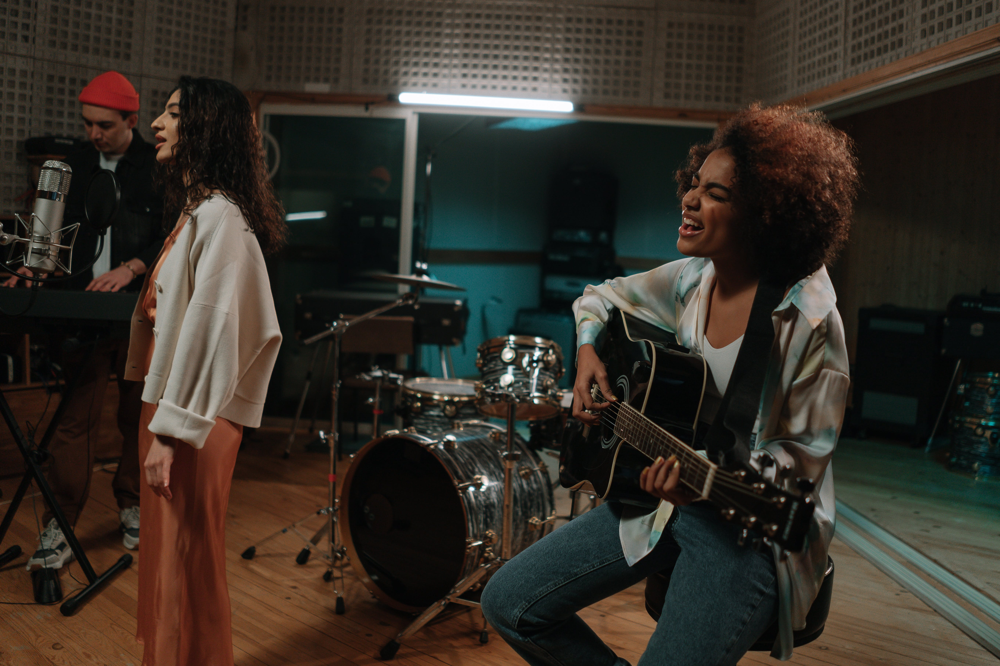
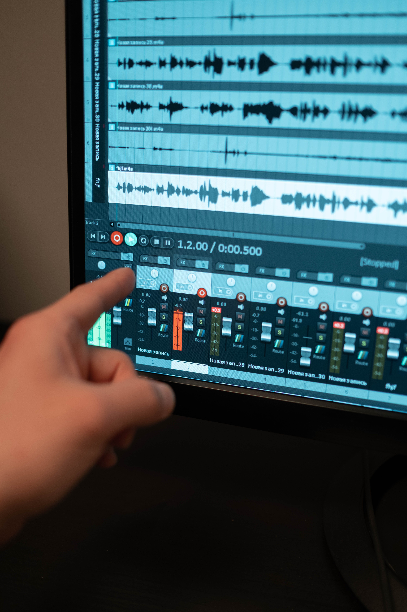
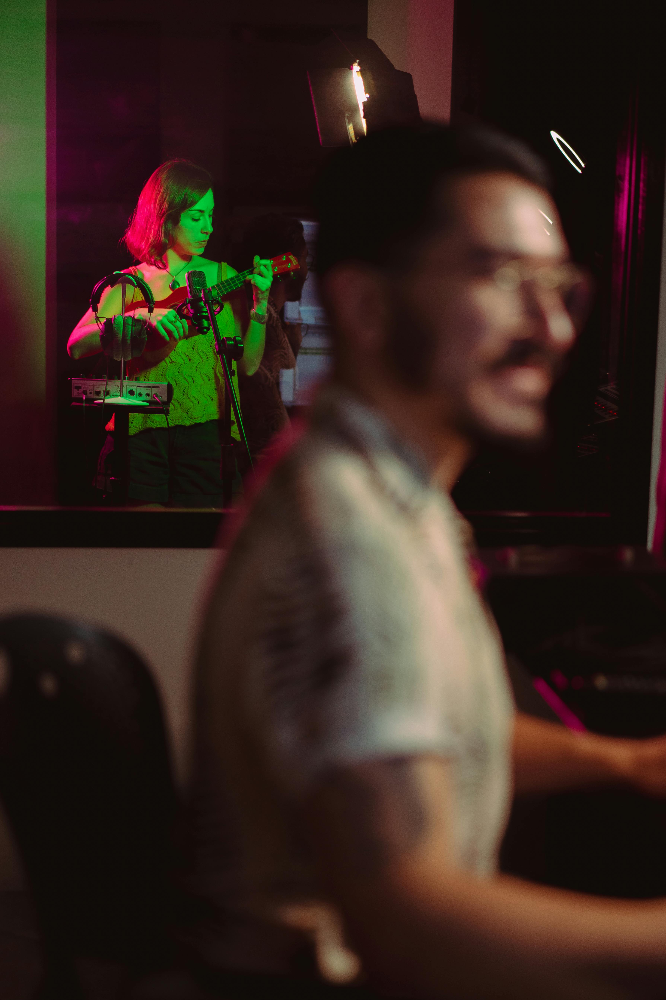
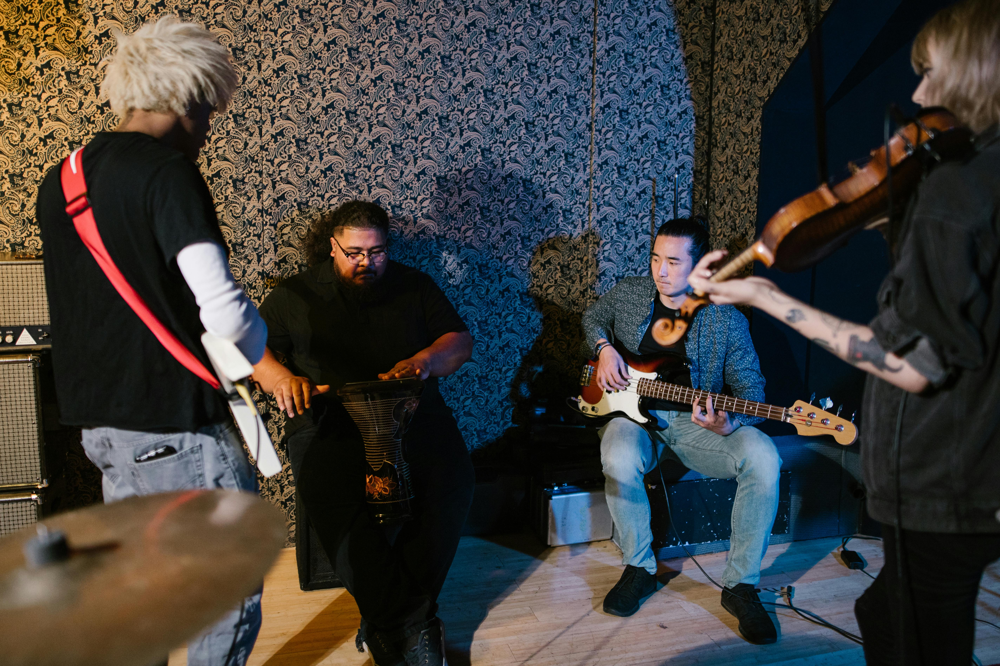

Música Original
Servicio orientado a las productoras y canales de TV, compañías teatrales, instituciones, empresas. La originalidad y la calidad son el sello de nuestra productora, contamos con reconocidos compositores y músicos a nivel nacional para desarrollar los proyectos.

Jingles Publicitarios
Servicio orientado a las agencias de publicidad, empresas y/o particulares que deseen una composición musical para destacar sus productos. Nuestro trabajo empieza con una reunión de preproducción con el cliente hasta entregarle el Master final de la composición.

Grabación, Edición y Diseño de Sonido
Servicio orientado a las agencias de publicidad, empresas y/o particulares que deseen una composición musical para destacar sus productos. Nuestro trabajo empieza con una reunión de preproducción con el cliente hasta entregarle el Master final de la composición.

Producción Musical
Servicio orientado a particulares con y sin experiencia musical. Este servicio consiste en la producción musical de una canción hasta un disco completo. Para ello contamos con un gran equipo formado por letristas, arregladores, compositores, ingenieros y músicos. El objetivo es la realización y el desarrollo de cualquier proyecto musical a partir de las ideas y sueños de nuestros clientes.
Frases Radiales
Servicio orientado a agencias publicitarias, productoras, empresas y particulares. Producimos frases radiales desde el guión hasta la grabación con nuestros locutores.

Musicalización
Servicio orientado a empresas, instituciones y privados. Musicalización de cenas, eventos, happy hours, comidas, reuniones sociales a través de un show realizado con músicos en vivo cuyo repertorio es elegido por el cliente. Contamos con una gran variedad de artistas: cantantes, saxo, flauta traversa, cuerdas, trio jazz, grupo de cámara etc.